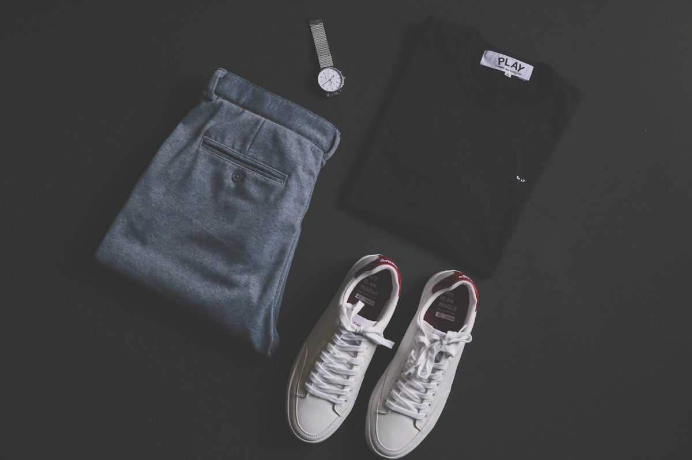

Total Wind Defiance. Zero Compromise.
Engineered from micro-ripstop polymers with zero cubic-feet-per-minute (0 CFM) wind permeability, WindBreakGear jackets shield high-altitude mountaineers from convective hypothermia while venting internal perspiration with unyielding breathability.

Convective Heat Loss Prevention in Mountain Environments
Wind chill is the foremost factor in mountain hypothermia. At 0°C, a 30-knot summit gust strips body heat ten times faster than still air. Our micro-porous membrane halts air molecules while allowing moisture vapor to escape.
0 CFM Absolute Wind Barrier
Densely woven micro-polyamide filaments eliminate convective wind penetration, maintaining an insulating microclimate around your torso even in 50 mph gale conditions.
Dynamic Vapor Permeation
Over 9 billion microscopic pores per square inch allow gaseous sweat vapor to dissipate freely, preventing the internal condensation that leads to damp hypothermia.
Diamond Ripstop Tenacity
High-tensile Cordura cross-hatch reinforcement grids stop punctures and tears from propagating when scrambling across jagged granite ridgelines.
Four Technical Silhouettes Built for Extreme Elements
From ultra-marathon trail running to glacial alpine ascents, each silhouette is tailored for anatomical articulation and storm protection.
 Alpine Expedition
Alpine Expedition
The GaleForce Pro
3-Layer storm shell featuring helmet-compatible Cohaesive hood and dual pit-zip ventilation ports.
 Ultralight (128g)
Ultralight (128g)
Ultralight Trail Shell
Featherweight windbreaker that packs down into its own chest pocket with an elastic carabiner loop.
 Severe Weather
Severe Weather
StormFront 3L Anorak
Deep-chested half-zip technical pullovers engineered with extended drop-tail hems for mountaineers.
Velocity Wind Runner
Active ventilation rear pleats with 360-degree reflective accents designed for mountain trail running.
Quantitative Laboratory Shell Comparison Matrix
Independent physical trials testing hydrostatic head, wind permeability, weight, and vapor transmission rates against industry standards.
| Outerwear Classification | Wind Permeability (CFM) | Hydrostatic Head (mm) | MVTR Breathability (g/m²) | Garment Weight |
|---|---|---|---|---|
| WindBreakGear GaleForce 3L | 0.00 CFM (Total Block) | 28,000 mm | 28,500 g/m²/24h | 310 grams |
| Conventional 2.5L Rain Jacket | 0.45 CFM | 15,000 mm | 12,000 g/m²/24h | 420 grams |
| Standard Ultralight Wind Shirt | 12.50 CFM (Porous) | 600 mm (Drizzle only) | 35,000 g/m²/24h | 110 grams |
| Heavy Duty Waxed Canvas Shell | 1.20 CFM | 5,000 mm | 4,500 g/m²/24h | 950 grams |

Three-Way Cohaesive Storm Hood Engineering
A windbreaker is only as reliable as its hood interface. Conventional drawcords whip violently against your cheeks in 40-knot summit winds and distort peripheral vision when turning your head.
WindBreakGear incorporates embedded Cohaesive cord-lock components directly into the laminated hood brim. A single rear cinch tightens the hood flush over climbing helmets, pivoting seamlessly with neck movement without obstructing line-of-sight.

C0 Fluorocarbon-Free DWR Surface Coating
Historically, waterproof outerwear relied on persistent fluorochemical coatings (PFCs/PFAS) that harmed alpine ecosystems and watershed wildlife.
WindBreakGear employs an advanced plant-based C0 durable water repellent (DWR) formulation. Highly branching hydrocarbon dendrimers lower surface energy, forcing water and freezing precipitation to bead into spheres and roll off without soaking the face fabric.
Micro-Taped Seams and Impermeable Zipper Metallurgy
Wind and rain search for the weakest path of resistance. Every seam and closure on a WindBreakGear shell is fortified against high-pressure wind gusts.
8mm Micro-Tape Seam Welds
Thermoplastic polyurethane sealing tape applied under precise pneumatic heat prevents driving wind and water seepage across all sewing punctures.
YKK Aquaguard Polyurethane Coils
Polyurethane-laminated reverse-coil zippers create an airtight seal against driving storms, eliminating the need for bulky external draft flaps.
Laser-Cut Internal Pockets
Ultrasonically welded internal storm pockets protect essential navigation electronics, transceivers, and batteries from sub-zero wind chills.
Verified by Mountain Guides Across Glacial Ridges
Tested on the exposed knife-edges of the Cascades, Patagonia, and Mount Washington during gale-force meteorological events.
"We clocked sustained 55 mph gusts on the summit ridge of Mount Rainier. My GaleForce Pro blocked the wind completely. My core stayed warm without moisture buildup on the steep push."
Erik S.Senior Alpine Guide • Washington
"The Ultralight Trail Shell is in my pack on every 50K ultra race. It weighs next to nothing, packs into a fist, and kept me from freezing when a hail storm hit the ridge."
Sarah K.Endurance Trail Athlete • Colorado
"The Cohaesive hood is the finest I've used in twenty years of mountaineering. It locks over my ski helmet instantly and moves with my head instead of blinding me."
Lukas B.Backcountry Ski Patrol • Wyoming

Maintaining 0 CFM Wind Barriers for a Lifetime
Technical membranes require proper cleaning to remove body oils and trail dust that can clog micro-pores. With simple care, your jacket will perform for decades.
- Technical Wash Formulation: Wash with specialized technical shell detergents that rinse clean without leaving surfactant residues.
- Low-Heat DWR Reactivation: Tumble dry on low heat for 20 minutes to reactivate the fluorocarbon-free water-beading surface.
- Patch Repair Guarantee: Never discard a torn jacket. Our Mercer studio provides adhesive Gore-Tex repair swatches for field patching.
Consult with Outerwear Specialists in New York
Visit our Manhattan studio to test shells in our controlled aerodynamic wind stream chamber, review membrane layering systems, and receive bespoke sizing adjustments.
Telephone: +1-888-777-5845 • Email: care@windbreakgear.com